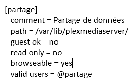
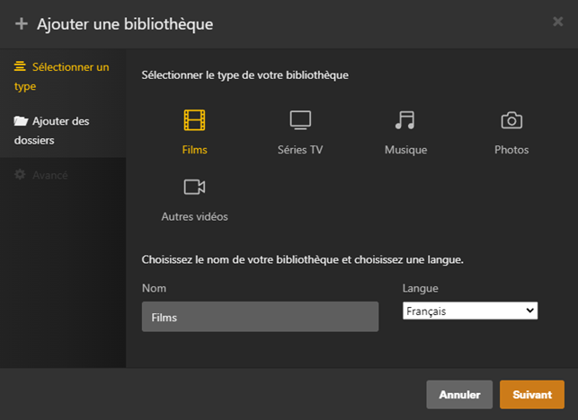
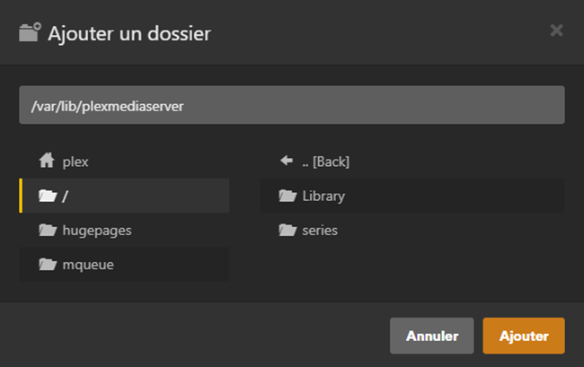
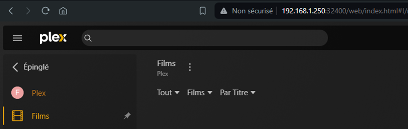

Afin de pouvoir réunir la majorité des services de streaming au même endroit et de pouvoir accéder à n'importe quel film ou série de mon choix, j'ai décidé de mettre en place un serveur multimédia qui se nomme Plex. Afin de pouvoir ajouter facilement n'importe quel film ou série j'ai décidé d'également mettre en place un partage via Samba.
• Installation d’une VM sous Debian 12
• Téléchargement de Plex
wget https://downloads.plex.tv/plex-media-server-new/1.40.1.8227-c0dd5a73e/debian/plexmediaserver_1.40.1.8227-c0dd5a73e_amd64.deb
• Installation du paquet
dpkg -i plexmediaserver_1.40.1.8227-c0dd5a73e_amd64.deb
• Installation du paquet de samba
apt update && apt install samba -y
• Activation du service samba
systemctl enable smbd
• Modification du fichier de configuration
vim etcsamba/smb.conf
Infos à ajouter :
• Redémarrer le service samba
systemctl restart smbd
• Créer un utilisateur pour le partage
adduser sio
• Ajout de l'utilisateur à Samba
smbpasswd -a sio
• Créer un groupe de partage
groupadd partage
• Ajout de l'utilisateur au groupe
gpasswd -a sio partage
• Ajout des droits sur le dossier de partage
chgrp -R partage /var/lib/plexmediaserver
chmod -R g+rw /var/lib/plexmediaserver
• Connexion sur l'interface WEB de Plex
http://192.168.1.250:32400/
• Ajout d'une nouvelle bibliothèque
• Sélection du répertoire de la bibliothèque
La bibliothèque a été créée :
(Lors du premier accès au partage, le login de l'utilisateur de samba est demandé)